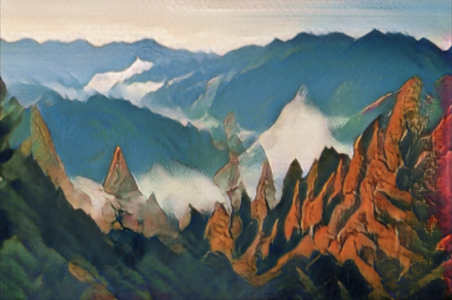
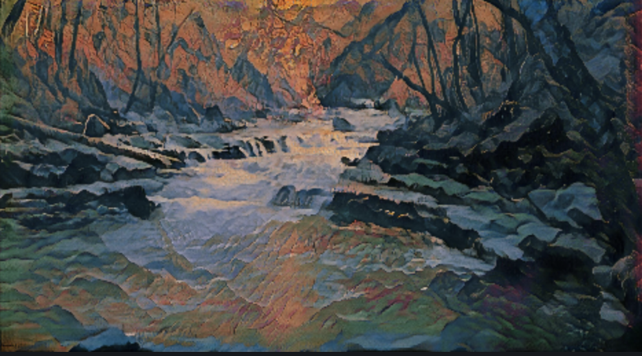
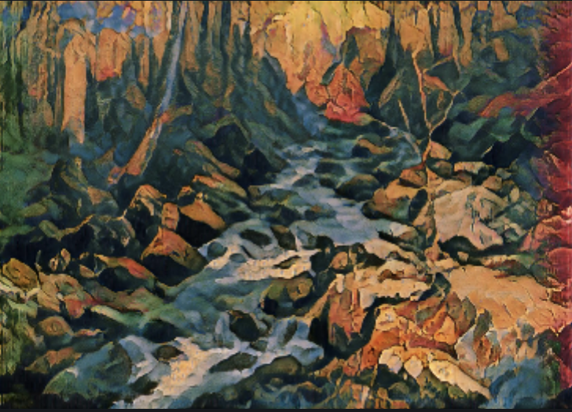

Welcome! This is runway ml, a certain kind of artificial intelligence that is able to generate images using filters and cross-references throughout the entire web. By having the computer working alongside the human, progress can be made that is unthinkable with only human intervention. Using knowledge, the program is capable of identifying and visualizing thousands of images. The following images are of the great outdoors. Durning the course of the pandemic, even nature had been shut down due to hikers passing each other on trails. 6 feet they said. Everywhere they said. This images stand in place of my love for nature and the bitterness felt when the government closed state parks down. In a world that doesn't seem real, I long to experience nature in its fullest once again.


